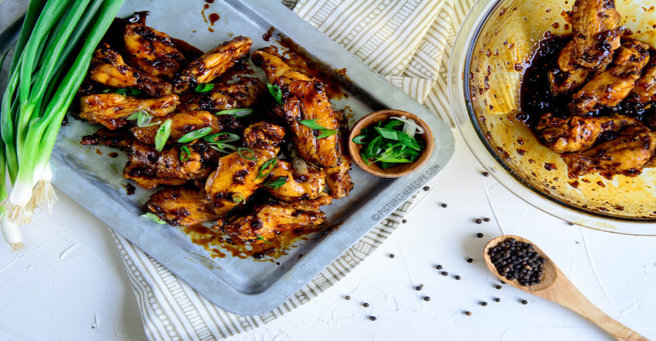

Black-pepper Soy chicken wings
INGREDIENTS
- 3 lbs Chicken Wings
- 2 Tbsp Oyster Sauce
- 2-3 green onions, sliced (for garnish)
- 2 Tbs Oil
- 1 tsp Ginger, grated or minced
- 1/2 Cup Shallot, finely diced
DIRECTIONS
- Preheat the oven to 425°F. Place a large wire rack on a baking sheet and coat with cooking spray.
- Arrange the chicken skin side up on the rack on the baking sheet. Brush with a little oil and roast for 20-25 minutes until the chicken is cooked, crisp up the skin by setting them under the broiler for 5-8 minutes watching them closely.
- Meanwhile while the chicken is cooking, heat a tiny bit of oil on a sauce pan and add the finely diced shallots and saute for 2-3 minutes until they soften.
- Add the minced garlic and ginger and fry for another minute or 2 until fragrant.
- Add the black pepper, both types of Soy, oyster sauce, sriracha (optional) and brown sugar (you can use honey instead) to the sauce pan and stir well.
- Let the sauce simmer and reduce to a thick syrupy consistency and then turn off the heat.
- Once the wings are cooked and crispy, transfer them to a big bowl and pour the sauce over it, tossing to coat them.
- Garnish with sliced green onions and enjoy while hot.